pacman::p_load(ggrepel, patchwork,
ggthemes, hrbrthemes,
tidyverse, haven) Take-Home Exercise 2
1 Overview
Social capital is a crucial element in the educational landscape, intertwining with the functioning and success of schools. Defined as the networks, relationships, and social bonds that individuals and communities build, social capital plays a pivotal role in shaping the educational experiences of students. In the context of schools, it manifests through the connections between students, teachers, parents, and the wider community.
2 Getting Started
2.1 Objectives
PISA is the OECD’s Programme for International Student Assessment. PISA measures 15-year-olds’ ability to use their reading, mathematics and science knowledge and skills to meet real-life challenges.
Initial results of PISA 2022 were released on 5 December 2023. 81 countries and economies took part in PISA 2022.
PISA 2022 shows that Singapore scored significantly higher than all other participating countries/economies in mathematics (575 points), reading (543 points) and science (561 points).
In this take-home exercise, I will demonstrate on how to deploy appropriate Exploratory Data Analysis (EDA) methods and ggplot2 functions to reveal:
the distribution of Singapore students’ performance in mathematics, reading, and science, and
the relationship between these performances with schools, gender and socioeconomic status of the students.
A total of not more than 5 EDA will be created in this take-home exercise. This study will use the results from PISA 2022.
2.2 The study area
This will be in the context of Singapore. Survey questions are found in this link.
2.3 Setting the Analytical Tools
I will use the following package:
- haven: Import and Export ‘SPSS’, ‘Stata’ and ‘SAS’ Files
- ggrepel: an R package provides geoms for ggplot2 to repel overlapping text labels.
- ggthemes: an R package provides some extra themes, geoms, and scales for ‘ggplot2’.
- hrbrthemes: an R package provides typography-centric themes and theme components for ggplot2.
- patchwork: an R package for preparing composite figure created using ggplot2.
3 Data Preparation
I will import the data from here
Step by Step on how to obtain the data is as shown below:
- Go to https://www.oecd.org/pisa/data/2022database/
- Scroll down and download the Student questionnaire data file only. Please ensure that the file downloaded is from the SAS (TM) Data Files (compressed) section.

I will first import the file downloaded from PICA.
stu.qqq <- read_sas("data/cy08msp_stu_qqq.sas7bdat")I will filter the data to Singapore.
stu_qqq_SG <- stu.qqq %>%
filter(CNT == "SGP")I will save the data to rds format.
write_rds(stu_qqq_SG,
"data/stu_qqq_SG.rds")I will read back the rds file.
stu_qqq_SG <- read_rds("data/stu_qqq_SG.rds")3.1 Summary Statistics
I will first have a look at the data structure
str(stu_qqq_SG)tibble [6,606 × 1,279] (S3: tbl_df/tbl/data.frame)
$ CNT : chr [1:6606] "SGP" "SGP" "SGP" "SGP" ...
..- attr(*, "label")= chr "Country code 3-character"
$ CNTRYID : num [1:6606] 702 702 702 702 702 702 702 702 702 702 ...
..- attr(*, "label")= chr "Country Identifier"
$ CNTSCHID : num [1:6606] 70200052 70200134 70200112 70200004 70200152 ...
..- attr(*, "label")= chr "Intl. School ID"
$ CNTSTUID : num [1:6606] 70200001 70200002 70200003 70200004 70200005 ...
..- attr(*, "label")= chr "Intl. Student ID"
$ CYC : chr [1:6606] "08MS" "08MS" "08MS" "08MS" ...
..- attr(*, "label")= chr "PISA Assessment Cycle (2 digits + 2 character Assessment type - MS/FT)"
$ NatCen : chr [1:6606] "070200" "070200" "070200" "070200" ...
..- attr(*, "label")= chr "National Centre 6-digit Code"
$ STRATUM : chr [1:6606] "SGP01" "SGP01" "SGP01" "SGP01" ...
..- attr(*, "label")= chr "Stratum ID 5-character (cnt + original stratum ID)"
$ SUBNATIO : chr [1:6606] "7020000" "7020000" "7020000" "7020000" ...
..- attr(*, "label")= chr "Adjudicated sub-region code 7-digit code (3-digit country code + region ID + stratum ID)"
$ REGION : num [1:6606] 70200 70200 70200 70200 70200 70200 70200 70200 70200 70200 ...
..- attr(*, "label")= chr "REGION"
$ OECD : num [1:6606] 0 0 0 0 0 0 0 0 0 0 ...
..- attr(*, "label")= chr "OECD country"
$ ADMINMODE : num [1:6606] 2 2 2 2 2 2 2 2 2 2 ...
..- attr(*, "label")= chr "Mode of Respondent"
$ LANGTEST_QQQ: num [1:6606] 313 313 313 313 313 313 313 313 313 313 ...
..- attr(*, "label")= chr "Language of Questionnaire"
$ LANGTEST_COG: num [1:6606] 313 313 313 313 313 313 313 313 313 313 ...
..- attr(*, "label")= chr "Language of Assessment"
$ LANGTEST_PAQ: num [1:6606] NA NA NA NA NA NA NA NA NA NA ...
..- attr(*, "label")= chr "Language of Parent Questionnaire"
$ Option_CT : num [1:6606] NA NA NA NA NA NA NA NA NA NA ...
..- attr(*, "label")= chr "Creative Thinking Option"
$ Option_FL : num [1:6606] NA NA NA NA NA NA NA NA NA NA ...
..- attr(*, "label")= chr "Financial Literacy Option"
$ Option_ICTQ : num [1:6606] 1 1 1 1 1 1 1 1 1 1 ...
..- attr(*, "label")= chr "ICT Questionnaire Option"
$ Option_WBQ : num [1:6606] 0 0 0 0 0 0 0 0 0 0 ...
..- attr(*, "label")= chr "Well-Being Questionnaire Option"
$ Option_PQ : num [1:6606] 0 0 0 0 0 0 0 0 0 0 ...
..- attr(*, "label")= chr "Parent Questionnaire Option"
$ Option_TQ : num [1:6606] 0 0 0 0 0 0 0 0 0 0 ...
..- attr(*, "label")= chr "Teacher Questionnaire Option"
$ Option_UH : num [1:6606] 0 0 0 0 0 0 0 0 0 0 ...
..- attr(*, "label")= chr "Une Heure Option"
$ BOOKID : num [1:6606] 4 45 8 40 42 15 13 39 14 7 ...
..- attr(*, "label")= chr "Form Identifier"
$ ST001D01T : num [1:6606] 10 10 10 10 10 10 10 10 10 10 ...
..- attr(*, "label")= chr "Student International Grade (Derived)"
$ ST003D02T : num [1:6606] 10 6 7 2 9 9 3 4 8 6 ...
..- attr(*, "label")= chr "Student (Standardized) Birth - Month"
$ ST003D03T : num [1:6606] 2006 2006 2006 2006 2006 ...
..- attr(*, "label")= chr "Student (Standardized) Birth -Year"
$ ST004D01T : num [1:6606] 1 2 2 2 1 1 2 2 1 2 ...
..- attr(*, "label")= chr "Student (Standardized) Gender"
$ ST250Q01JA : num [1:6606] 2 1 1 2 2 2 1 1 2 2 ...
..- attr(*, "label")= chr "Which of the following are in your [home]: A room of your own"
$ ST250Q02JA : num [1:6606] 1 1 1 1 1 1 1 1 1 1 ...
..- attr(*, "label")= chr "Which of the following are in your [home]: A computer (laptop, desktop, or tablet) that you can use for school work"
$ ST250Q03JA : num [1:6606] 1 1 2 1 1 1 1 1 1 1 ...
..- attr(*, "label")= chr "Which of the following are in your [home]: Educational Software or Apps"
$ ST250Q04JA : num [1:6606] 1 1 1 1 1 1 1 1 1 1 ...
..- attr(*, "label")= chr "Which of the following are in your [home]: Your own [cell phone] with Internet access (e.g. smartphone)"
$ ST250Q05JA : num [1:6606] 1 1 1 1 1 1 1 1 1 1 ...
..- attr(*, "label")= chr "Which of the following are in your [home]: Internet access (e.g. Wi-fi) (excluding through smartphones)"
$ ST250D06JA : chr [1:6606] "7020002" "7020001" "7020001" "7020002" ...
..- attr(*, "label")= chr "Which of the following are in your home? <Country-specific item 1>"
$ ST250D07JA : chr [1:6606] "7020002" "7020001" "7020002" "7020002" ...
..- attr(*, "label")= chr "Which of the following are in your home? <Country-specific item 2>"
$ ST251Q01JA : num [1:6606] 2 1 2 1 2 2 2 1 3 3 ...
..- attr(*, "label")= chr "How many of these items are there at your [home]: Cars, vans, or trucks"
$ ST251Q02JA : num [1:6606] 1 4 1 2 2 1 1 1 1 1 ...
..- attr(*, "label")= chr "How many of these items are there at your [home]: Mopeds or motorcycles"
$ ST251Q03JA : num [1:6606] 3 3 3 3 2 2 3 3 4 3 ...
..- attr(*, "label")= chr "How many of these items are there at your [home]: Rooms with a bath or shower"
$ ST251Q04JA : num [1:6606] 3 3 3 3 2 3 3 3 4 3 ...
..- attr(*, "label")= chr "How many of these items are there at your [home]: Rooms with a [flush toilet]"
$ ST251Q06JA : num [1:6606] 3 4 2 2 1 2 2 3 4 1 ...
..- attr(*, "label")= chr "How many of these items are there at your [home]: Musical instruments (e.g. guitar, piano, [country-specific example])"
$ ST251Q07JA : num [1:6606] 3 2 1 1 4 1 4 1 4 3 ...
..- attr(*, "label")= chr "How many of these items are there at your [home]: Works of art (e.g. paintings, sculptures, [country-specific example])"
$ ST251D08JA : chr [1:6606] "9999997" "9999997" "9999997" "9999997" ...
..- attr(*, "label")= chr "How many of these items are there at your home? <Country-specific item 1>"
$ ST251D09JA : chr [1:6606] "9999997" "9999997" "9999997" "9999997" ...
..- attr(*, "label")= chr "How many of these items are there at your home? <Country-specific item 2>"
$ ST253Q01JA : num [1:6606] 7 8 7 6 7 7 8 8 8 7 ...
..- attr(*, "label")= chr "How many [digital devices] with screens are there in your [home]?"
$ ST254Q01JA : num [1:6606] 2 3 2 2 2 2 2 2 2 2 ...
..- attr(*, "label")= chr "How many of the following [digital devices] are in your [home]: Televisions"
$ ST254Q02JA : num [1:6606] 1 2 2 1 3 2 2 5 2 2 ...
..- attr(*, "label")= chr "How many of the following [digital devices] are in your [home]: Desktop computers"
$ ST254Q03JA : num [1:6606] 3 2 2 2 2 2 3 3 3 4 ...
..- attr(*, "label")= chr "How many of the following [digital devices] are in your [home]: Laptop computers or notebooks"
$ ST254Q04JA : num [1:6606] 2 3 2 1 1 2 2 3 3 2 ...
..- attr(*, "label")= chr "How many of the following [digital devices] are in your [home]: Tablets (e.g. [iPad®], [BlackBerry® Playbook™])"
$ ST254Q05JA : num [1:6606] 1 5 1 1 NA 1 1 5 2 2 ...
..- attr(*, "label")= chr "How many of the following [digital devices] are in your [home]: E-book readers (e.g. [Kindle™], [Kobo], [Bookeen])"
$ ST254Q06JA : num [1:6606] 3 2 3 3 4 2 4 3 4 4 ...
..- attr(*, "label")= chr "How many of the following [digital devices] are in your [home]: [Cell phones] with Internet access (i.e. smartphones)"
$ ST255Q01JA : num [1:6606] 7 4 4 3 2 2 4 5 7 4 ...
..- attr(*, "label")= chr "How many books are there in your [home]?"
$ ST256Q01JA : num [1:6606] 2 4 5 2 4 1 1 3 4 4 ...
..- attr(*, "label")= chr "How many of these books at [home]: Religious books (e.g. [Bible], [Example 2])"
$ ST256Q02JA : num [1:6606] 2 5 2 1 1 2 1 5 4 2 ...
..- attr(*, "label")= chr "How many of these books at [home]: Classical literature (e.g. [Shakespeare], [Example 2])"
$ ST256Q03JA : num [1:6606] 4 5 2 1 1 2 2 5 5 1 ...
..- attr(*, "label")= chr "How many of these books at [home]: Contemporary literature"
$ ST256Q06JA : num [1:6606] 4 3 3 2 2 5 2 4 4 1 ...
..- attr(*, "label")= chr "How many of these books at [home]: Books on science"
$ ST256Q07JA : num [1:6606] 3 5 5 2 2 5 1 4 3 1 ...
..- attr(*, "label")= chr "How many of these books at [home]: Books on art, music, or design"
$ ST256Q08JA : num [1:6606] 3 3 3 1 1 5 1 5 5 2 ...
..- attr(*, "label")= chr "How many of these books at [home]: [Technical reference books]"
$ ST256Q09JA : num [1:6606] 2 2 4 2 2 2 2 2 2 3 ...
..- attr(*, "label")= chr "How many of these books at [home]: Dictionaries"
$ ST256Q10JA : num [1:6606] 4 4 5 2 4 1 4 4 4 3 ...
..- attr(*, "label")= chr "How many of these books at [home]: Books to help with your school work"
$ ST230Q01JA : num [1:6606] 4 4 2 4 4 3 2 2 3 4 ...
..- attr(*, "label")= chr "How many siblings (including brothers, sisters, step-brothers, and step-sisters) do you have?"
$ ST005Q01JA : num [1:6606] 2 2 2 2 2 2 2 2 2 2 ...
..- attr(*, "label")= chr "What is the [highest level of schooling] completed by your mother?"
$ ST006Q01JA : num [1:6606] 2 2 2 2 2 2 2 NA 2 2 ...
..- attr(*, "label")= chr "Does your mother have any of the following qualifications: [ISCED level 8]"
$ ST006Q02JA : num [1:6606] 2 2 2 2 2 2 2 1 2 2 ...
..- attr(*, "label")= chr "Does your mother have any of the following qualifications: [ISCED level 7]"
$ ST006Q03JA : num [1:6606] 1 2 2 2 2 2 2 1 1 1 ...
..- attr(*, "label")= chr "Does your mother have any of the following qualifications: [ISCED level 6]"
$ ST006Q04JA : num [1:6606] 2 1 2 2 1 1 2 1 1 2 ...
..- attr(*, "label")= chr "Does your mother have any of the following qualifications: [ISCED level 5]"
$ ST006Q05JA : num [1:6606] 1 1 2 1 2 1 1 1 1 1 ...
..- attr(*, "label")= chr "Does your mother have any of the following qualifications: [ISCED level 4]"
$ ST007Q01JA : num [1:6606] 2 2 2 4 2 2 4 2 2 2 ...
..- attr(*, "label")= chr "What is the [highest level of schooling] completed by your father?"
$ ST008Q01JA : num [1:6606] 2 2 2 NA 2 2 2 NA 2 2 ...
..- attr(*, "label")= chr "Does your father have any of the following qualifications: [ISCED level 8]"
$ ST008Q02JA : num [1:6606] 2 2 2 NA 2 1 2 NA 2 2 ...
..- attr(*, "label")= chr "Does your father have any of the following qualifications: [ISCED level 7]"
$ ST008Q03JA : num [1:6606] 2 2 2 NA 2 1 2 1 1 2 ...
..- attr(*, "label")= chr "Does your father have any of the following qualifications: [ISCED level 6]"
$ ST008Q04JA : num [1:6606] 1 1 2 NA 1 1 2 1 1 1 ...
..- attr(*, "label")= chr "Does your father have any of the following qualifications: [ISCED level 5]"
$ ST008Q05JA : num [1:6606] 2 1 2 1 2 1 2 1 1 2 ...
..- attr(*, "label")= chr "Does your father have any of the following qualifications: [ISCED level 4]"
$ ST258Q01JA : num [1:6606] 1 1 1 5 1 1 1 1 1 1 ...
..- attr(*, "label")= chr "In the past 30 days, how often did you not eat because there was not enough money to buy food?"
$ ST259Q01JA : num [1:6606] NA NA NA NA NA NA NA NA NA NA ...
..- attr(*, "label")= chr "Now think about where you would place your family on this scale. Where would you say your family stands at this time?"
$ ST259Q02JA : num [1:6606] NA NA NA NA NA NA NA NA NA NA ...
..- attr(*, "label")= chr "Now think about where you would place your family on this scale. Where do you think you will stand when you are 30?"
$ ST019AQ01T : num [1:6606] 1 1 1 1 1 2 1 2 1 1 ...
..- attr(*, "label")= chr "In what country were you and your parents born? You"
$ ST019BQ01T : num [1:6606] 1 1 2 1 1 2 1 2 1 1 ...
..- attr(*, "label")= chr "In what country were you and your parents born? Mother"
$ ST019CQ01T : num [1:6606] 1 1 1 1 1 2 1 2 1 1 ...
..- attr(*, "label")= chr "In what country were you and your parents born? Father"
$ ST021Q01TA : num [1:6606] NA NA NA NA NA 1 NA 1 NA NA ...
..- attr(*, "label")= chr "How old were you when you arrived in [country of test]?"
$ ST022Q01TA : num [1:6606] 1 1 2 2 1 2 1 2 1 2 ...
..- attr(*, "label")= chr "What language do you speak at home most of the time?"
$ ST226Q01JA : num [1:6606] 1 1 1 1 1 1 1 4 1 1 ...
..- attr(*, "label")= chr "How long have you been enrolled at this school?"
$ ST125Q01NA : num [1:6606] 3 5 8 4 8 3 4 8 8 4 ...
..- attr(*, "label")= chr "How old were you when you started [ISCED 0]: Years"
$ ST126Q01TA : num [1:6606] 4 5 5 5 5 5 5 5 4 5 ...
..- attr(*, "label")= chr "How old were you when you started [ISCED 1]: Years"
$ ST127Q01TA : num [1:6606] 1 1 1 1 1 1 1 1 1 1 ...
..- attr(*, "label")= chr "Have you ever repeated a [grade]: At [ISCED 1]"
$ ST127Q02TA : num [1:6606] 1 1 1 1 1 1 1 1 1 1 ...
..- attr(*, "label")= chr "Have you ever repeated a [grade]: At [ISCED 2]"
$ ST127Q03TA : num [1:6606] 1 1 1 1 1 1 1 1 1 1 ...
..- attr(*, "label")= chr "Have you ever repeated a [grade]: At [ISCED 3]"
$ ST260Q01JA : num [1:6606] 1 1 1 1 1 1 1 1 1 1 ...
..- attr(*, "label")= chr "Have you ever missed school for more than three months in a row: At [ISCED 1]"
$ ST260Q02JA : num [1:6606] 1 1 1 1 1 1 1 1 1 1 ...
..- attr(*, "label")= chr "Have you ever missed school for more than three months in a row: At [ISCED 2]"
$ ST260Q03JA : num [1:6606] 1 1 1 1 1 1 1 1 1 1 ...
..- attr(*, "label")= chr "Have you ever missed school for more than three months in a row: At [ISCED 3]"
$ ST261Q01JA : num [1:6606] NA NA NA NA NA NA NA NA NA NA ...
..- attr(*, "label")= chr "Why miss school for 3+ months: I was bored."
$ ST261Q02JA : num [1:6606] NA NA NA NA NA NA NA NA NA NA ...
..- attr(*, "label")= chr "Why miss school for 3+ months: I was suspended for something (e.g. violence, aggression, use of drugs, drug dealing)."
$ ST261Q03JA : num [1:6606] NA NA NA NA NA NA NA NA NA NA ...
..- attr(*, "label")= chr "Why miss school for 3+ months: I was pregnant."
$ ST261Q04JA : num [1:6606] NA NA NA NA NA NA NA NA NA NA ...
..- attr(*, "label")= chr "Why miss school for 3+ months: I could not reach school because of transportation problems."
$ ST261Q05JA : num [1:6606] NA NA NA NA NA NA NA NA NA NA ...
..- attr(*, "label")= chr "Why miss school for 3+ months: I had to take care of a family member."
$ ST261Q06JA : num [1:6606] NA NA NA NA NA NA NA NA NA NA ...
..- attr(*, "label")= chr "Why miss school for 3+ months: I had to help with work at home, the family business, or on the family land."
$ ST261Q07JA : num [1:6606] NA NA NA NA NA NA NA NA NA NA ...
..- attr(*, "label")= chr "Why miss school for 3+ months: I had to get work to bring money home."
$ ST261Q08JA : num [1:6606] NA NA NA NA NA NA NA NA NA NA ...
..- attr(*, "label")= chr "Why miss school for 3+ months: I was sick."
$ ST261Q09JA : num [1:6606] NA NA NA NA NA NA NA NA NA NA ...
..- attr(*, "label")= chr "Why miss school for 3+ months: I did not feel safe at school."
$ ST261Q10JA : num [1:6606] NA NA NA NA NA NA NA NA NA NA ...
..- attr(*, "label")= chr "Why miss school for 3+ months: I could not pay [school fees]."
$ ST261Q11JA : num [1:6606] NA NA NA NA NA NA NA NA NA NA ...
..- attr(*, "label")= chr "Why miss school for 3+ months: School was closed because of a natural disaster (e.g. flood, earthquake)."
$ ST062Q01TA : num [1:6606] 1 1 1 1 2 1 1 1 1 1 ...
..- attr(*, "label")= chr "In the last two full weeks of school, how often: I [skipped] a whole school day"
[list output truncated]There are are total of 6606 rows and 1279 columns.
Further filter of data is needed.
3.2 Extracting the study data
I will extract the following:
Gender: ST004D01T

Socioeconomic Status: ESCS

School: I will use Expected Education Level as the school. The reason is that in the PISA data, it is not meaningful to use the current school level (most of age 15 years old) and no information on the school name: EXPECEDU

Math score - PV1MATH to PV10MATH
Science score - PV1SCIE to PV10SCIE
Reading score - PV1READ to PV10READ
stu_qqq_SG_1 <- stu_qqq_SG %>%
select(ST004D01T,EXPECEDU, PV1MATH, PV2MATH,PV3MATH,PV4MATH,PV5MATH,PV6MATH,PV7MATH ,PV8MATH,PV9MATH,PV10MATH,PV1SCIE,PV2SCIE,PV3SCIE,PV4SCIE,PV5SCIE,PV6SCIE,PV7SCIE,PV8SCIE,PV9SCIE,PV10SCIE,PV1READ,PV2READ,PV3READ,PV4READ,PV5READ,PV6READ,PV7READ,PV8READ,PV9READ,PV10READ,ESCS)I will save the data to rds format as well:
write_rds(stu_qqq_SG_1,
"data/stu_qqq_SG_1.rds")I will read back the rds file.
stu_qqq_SG_1 <- read_rds("data/stu_qqq_SG_1.rds")glimpse(stu_qqq_SG_1)Rows: 6,606
Columns: 33
$ ST004D01T <dbl> 1, 2, 2, 2, 1, 1, 2, 2, 1, 2, 2, 1, 1, 2, 1, 2, 1, 2, 1, 1, …
$ EXPECEDU <dbl> 7, 7, 6, NA, 6, 7, 9, 9, 7, 6, 7, 8, 9, 9, 9, 9, 7, 7, 7, 7,…
$ PV1MATH <dbl> 639.004, 697.191, 693.710, 427.317, 436.462, 569.982, 771.62…
$ PV2MATH <dbl> 601.251, 754.277, 654.450, 410.376, 453.450, 539.609, 672.81…
$ PV3MATH <dbl> 621.480, 671.940, 696.938, 423.586, 392.315, 531.648, 653.74…
$ PV4MATH <dbl> 631.596, 657.300, 646.187, 388.935, 439.986, 534.368, 734.81…
$ PV5MATH <dbl> 579.276, 621.126, 678.119, 330.962, 443.125, 465.815, 727.52…
$ PV6MATH <dbl> 591.791, 655.729, 644.019, 379.988, 452.648, 528.509, 729.83…
$ PV7MATH <dbl> 600.709, 747.934, 720.531, 398.535, 396.970, 514.326, 597.22…
$ PV8MATH <dbl> 587.322, 694.365, 671.425, 422.127, 459.945, 521.029, 772.27…
$ PV9MATH <dbl> 618.131, 742.732, 694.085, 375.354, 438.166, 472.382, 694.39…
$ PV10MATH <dbl> 581.973, 656.934, 668.304, 453.348, 448.084, 503.387, 725.29…
$ PV1SCIE <dbl> 710.634, 670.646, 666.095, 340.308, 456.333, 475.158, 693.80…
$ PV2SCIE <dbl> 618.739, 748.839, 604.771, 329.889, 453.400, 470.030, 626.98…
$ PV3SCIE <dbl> 591.623, 635.443, 704.217, 411.353, 498.937, 461.218, 627.38…
$ PV4SCIE <dbl> 659.770, 639.735, 687.659, 327.974, 532.324, 504.199, 676.79…
$ PV5SCIE <dbl> 635.892, 608.385, 690.974, 292.183, 508.231, 486.930, 661.84…
$ PV6SCIE <dbl> 646.901, 670.662, 617.175, 355.423, 504.461, 493.011, 618.39…
$ PV7SCIE <dbl> 603.569, 734.807, 692.886, 400.182, 404.572, 469.950, 602.07…
$ PV8SCIE <dbl> 621.352, 639.748, 630.900, 317.518, 549.457, 464.012, 653.97…
$ PV9SCIE <dbl> 659.674, 716.768, 656.620, 298.893, 411.062, 440.113, 645.47…
$ PV10SCIE <dbl> 649.719, 655.670, 649.087, 362.702, 473.613, 495.410, 662.55…
$ PV1READ <dbl> 676.298, 625.585, 620.116, 381.495, 448.199, 469.441, 744.53…
$ PV2READ <dbl> 692.247, 686.716, 559.078, 400.815, 560.636, 500.350, 679.85…
$ PV3READ <dbl> 690.981, 663.147, 554.767, 374.911, 365.478, 375.703, 635.12…
$ PV4READ <dbl> 643.067, 567.435, 587.026, 367.484, 469.970, 377.452, 725.55…
$ PV5READ <dbl> 627.908, 614.500, 591.806, 336.009, 503.664, 470.781, 731.16…
$ PV6READ <dbl> 684.676, 604.745, 570.547, 324.630, 481.215, 415.448, 684.68…
$ PV7READ <dbl> 661.380, 669.375, 599.078, 396.242, 436.800, 448.547, 646.02…
$ PV8READ <dbl> 674.070, 623.735, 545.610, 374.723, 531.226, 434.381, 756.80…
$ PV9READ <dbl> 666.282, 649.579, 610.466, 314.704, 480.997, 411.703, 653.76…
$ PV10READ <dbl> 657.387, 571.261, 590.758, 342.956, 478.578, 410.846, 784.71…
$ ESCS <dbl> 0.1836, 0.8261, -1.0357, -0.9606, 0.0856, 0.1268, -0.0154, 1…4 Data Wrangling
4.1 Average of plausible values from subjects
10 different values are given for the different subjects. I will need to find the average of plausible values.
4.1.1 Math
stu_qqq_SG_1 <- stu_qqq_SG_1 %>%
mutate(math_average = rowMeans(across(c(PV1MATH, PV2MATH, PV3MATH,PV4MATH,PV5MATH,PV6MATH,PV7MATH,PV8MATH,PV9MATH,PV10MATH))))4.1.2 Science
stu_qqq_SG_1 <- stu_qqq_SG_1 %>%
mutate(sci_average = rowMeans(across(c(PV1SCIE, PV2SCIE, PV3SCIE,PV4SCIE,PV5SCIE,PV6SCIE,PV7SCIE,PV8SCIE,PV9SCIE,PV10SCIE))))4.1.3 Reading
stu_qqq_SG_1 <- stu_qqq_SG_1 %>%
mutate(read_average = rowMeans(across(c(PV1READ, PV2READ, PV3READ, PV4READ, PV5READ, PV6READ, PV7READ, PV8READ, PV9READ, PV10READ))))4.2 Rename of column headings
I will rename some column for better reference
stu_qqq_SG_1 <- stu_qqq_SG_1 %>%
rename(gender = ST004D01T, socioeconomic_status = ESCS, school = EXPECEDU)I will now filter to the columns I want
stu_qqq_SG_2 <- stu_qqq_SG_1 %>%
select(gender, socioeconomic_status , school , math_average, sci_average, read_average)I will save it do rds format as well
write_rds(stu_qqq_SG_2,
"data/stu_qqq_SG_2.rds")I will import back the rds file
stu_qqq_SG_2 <- read_rds("data/stu_qqq_SG_2.rds")glimpse(stu_qqq_SG_2)Rows: 6,606
Columns: 6
$ gender <dbl> 1, 2, 2, 2, 1, 1, 2, 2, 1, 2, 2, 1, 1, 2, 1, 2, 1…
$ socioeconomic_status <dbl> 0.1836, 0.8261, -1.0357, -0.9606, 0.0856, 0.1268,…
$ school <dbl> 7, 7, 6, NA, 6, 7, 9, 9, 7, 6, 7, 8, 9, 9, 9, 9, …
$ math_average <dbl> 605.2533, 689.9528, 676.7768, 401.0528, 436.1151,…
$ sci_average <dbl> 639.7873, 672.0703, 660.0384, 343.6425, 479.2390,…
$ read_average <dbl> 667.4296, 627.6078, 582.9252, 361.3969, 475.6763,…4.3 Recode column information
A closer look at the expected education reveals some confusion.

From the link, I would need to map to the correct education level in Singapore

| ISCED | Singapore |
|---|---|
| 2 | Lower Secondary |
| 3 | Upper Secondary |
| 5 | Post Secondary |
| 6 | Diploma |
| 7 | Bachelor’s Degree |
| 8 | Master’s Degree |
| 9 | PhD |
Now, I will recode the column information
For gender:
stu_qqq_SG_3 <- stu_qqq_SG_2 %>%
mutate(gender = case_when(
gender == "1" ~ "Female",
gender == "2" ~ "Male"))summary(stu_qqq_SG_3) gender socioeconomic_status school math_average
Length:6606 Min. :-3.5488 Min. :2.000 Min. :262.6
Class :character 1st Qu.:-0.2327 1st Qu.:6.000 1st Qu.:506.2
Mode :character Median : 0.4817 Median :7.000 Median :582.4
Mean : 0.2904 Mean :7.006 Mean :574.0
3rd Qu.: 0.9036 3rd Qu.:8.000 3rd Qu.:648.4
Max. : 3.2780 Max. :9.000 Max. :842.7
NA's :47 NA's :209
sci_average read_average
Min. :242.0 Min. :158.6
1st Qu.:498.9 1st Qu.:477.4
Median :571.2 Median :553.6
Mean :561.0 Mean :542.5
3rd Qu.:629.3 3rd Qu.:616.1
Max. :801.9 Max. :797.6
For expected education
stu_qqq_SG_3 <- stu_qqq_SG_3 %>%
mutate(school = case_when(
school == "2" ~ "Lower Sec",
school == "3" ~ "Upper Sec",
school == "5" ~ "Post Sec",
school == "6" ~ "Diploma",
school == "7" ~ "Degree",
school == "8" ~ "Masters",
school == "9" ~ "PhD"
))I will save the file to rds
write_rds(stu_qqq_SG_3,
"data/stu_qqq_SG_3.rds")I will import back the rds file
stu_qqq_SG_3 <- read_rds("data/stu_qqq_SG_3.rds")5 Exploratory Data Analysis
Before I begin, I will the summary function to have a look at the results for the various subjects:
summary(stu_qqq_SG_3) gender socioeconomic_status school math_average
Length:6606 Min. :-3.5488 Length:6606 Min. :262.6
Class :character 1st Qu.:-0.2327 Class :character 1st Qu.:506.2
Mode :character Median : 0.4817 Mode :character Median :582.4
Mean : 0.2904 Mean :574.0
3rd Qu.: 0.9036 3rd Qu.:648.4
Max. : 3.2780 Max. :842.7
NA's :47
sci_average read_average
Min. :242.0 Min. :158.6
1st Qu.:498.9 1st Qu.:477.4
Median :571.2 Median :553.6
Mean :561.0 Mean :542.5
3rd Qu.:629.3 3rd Qu.:616.1
Max. :801.9 Max. :797.6
I will make gender, and school as factors:
stu_qqq_SG_3$gender <- as.factor(stu_qqq_SG_3$gender )
stu_qqq_SG_3$school <- as.factor(stu_qqq_SG_3$school)5.1 Histograms - Subjects
Now I will plot the individual histograms for each subjects with the counts. After which, I will combine the histograms together to do a comparison across the subjects.
Math
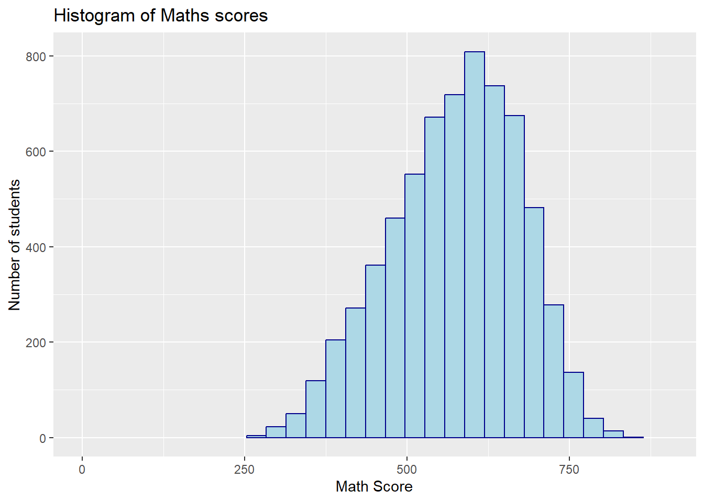
p1 <- ggplot(data=stu_qqq_SG_3,
aes(x = math_average)) +
geom_histogram(bins=20,
boundary = 100,
color="darkblue",
fill="light blue") +
coord_cartesian(xlim=c(0,900)) +
ggtitle("Histogram of Maths scores")+
labs(x = "Math Score")+
labs(y= "Number of students")Reading
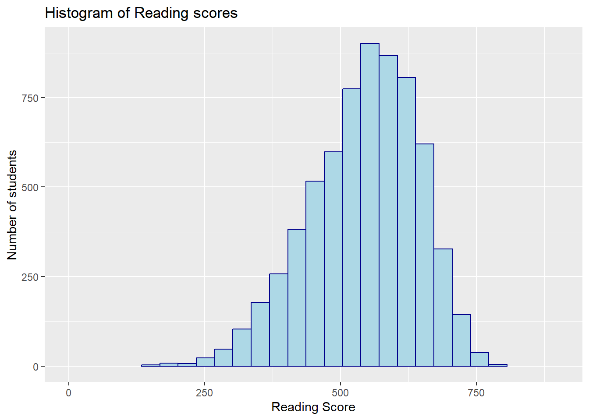
p2 <- ggplot(data=stu_qqq_SG_3,
aes(x = read_average)) +
geom_histogram(bins=20,
boundary = 100,
color="darkblue",
fill="light blue") +
coord_cartesian(xlim=c(0,900)) +
ggtitle("Histogram of Reading scores")+
labs(x = "Reading Score")+
labs(y= "Number of students")Science
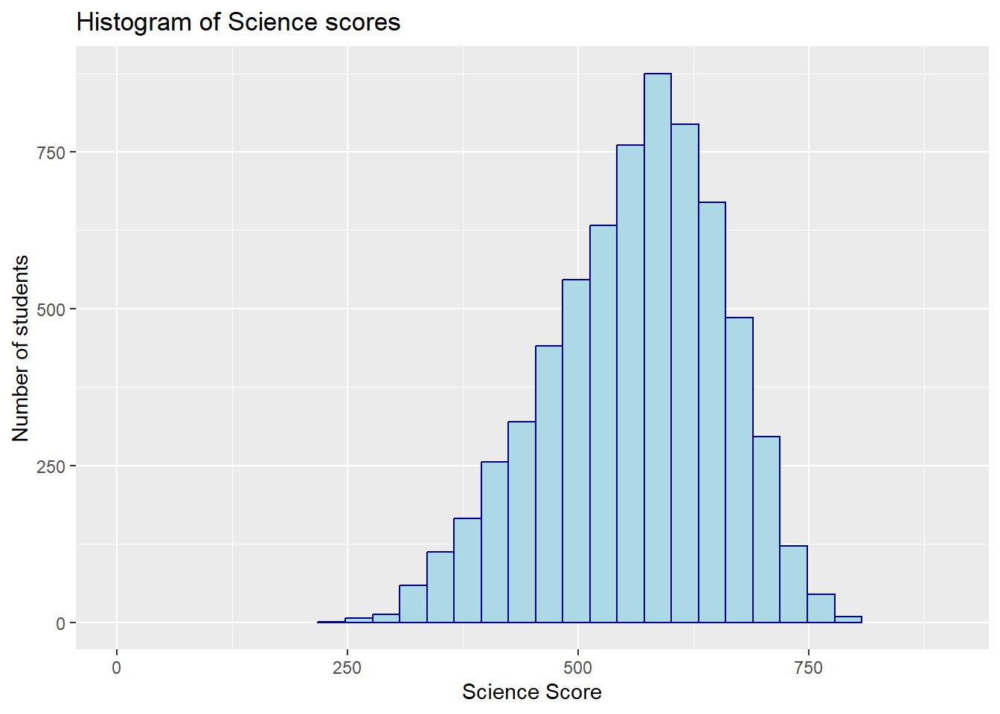
p3 <- ggplot(data=stu_qqq_SG_3,
aes(x = sci_average)) +
geom_histogram(bins=20,
boundary = 100,
color="darkblue",
fill="light blue") +
coord_cartesian(xlim=c(0,900)) +
ggtitle("Histogram of Science scores")+
labs(x = "Math Score")+
labs(y= "Number of students")Let me put all the plots together to compare now:
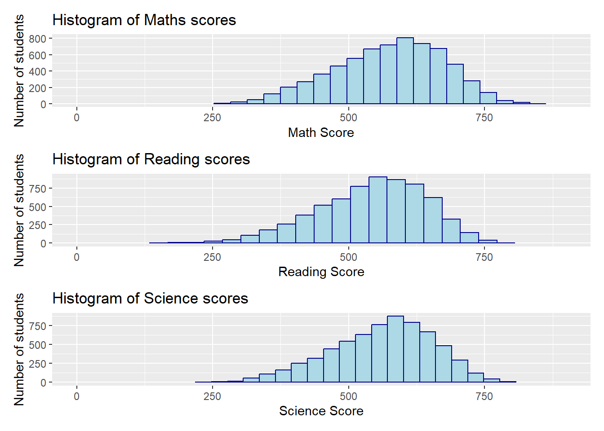
(p1 / p2 / p3)
Findings
Comparing the 3 histograms, Math score is comparatively better as compared to Science and Reading score. Math score has an mean of 574, while Science has mean of 561 and Reading has a mean of 542.5.
In addition, Math score seems to be symmetrically normally distributed. Science and Reading score seems to be left skewed normally distributed.
5.1.2 REMAKE:
Math & science & Reading
Show the code
p1 <- ggplot(data=stu_qqq_SG_3,
aes(x = math_average)) +
geom_histogram(bins = 10, boundary = 100, color = "blue", fill = "#3459e6")+
coord_cartesian(xlim=c(0,900)) +
ggtitle("DIstribution of Maths scores") +
labs(x = "Math Score")+
labs(y= "Number of students")+
theme_minimal()+
theme(text = element_text(size = 8),
plot.title = element_text(hjust = 0.5))+
geom_vline(aes(xintercept=mean(stu_qqq_SG_3$math_average, na.rm = T)),
colour="red",
linewidth=1,
linetype="dashed") +
annotate("text",
x=450,
y=100,
label=paste("Mean =", round(mean(stu_qqq_SG_3$math_average, na.rm = T), 0)),
color="red",
size=4.5)
p2 <- ggplot(data=stu_qqq_SG_3,
aes(x = read_average)) +
geom_histogram(bins = 10, boundary = 100, color = "blue", fill = "#3459e6")+
coord_cartesian(xlim=c(0,900)) +
ggtitle("Distribution of Reading scores")+
labs(x = "Reading Score")+
labs(y= "Number of students")+
theme_minimal()+
theme(text = element_text(size = 8),
plot.title = element_text(hjust = 0.5))+
geom_vline(aes(xintercept=mean(stu_qqq_SG_3$read_average, na.rm = T)),
colour="red",
linewidth=1,
linetype="dashed") +
annotate("text",
x=420,
y=100,
label=paste("Mean =", round(mean(stu_qqq_SG_3$read_average, na.rm = T), 0)),
color="red",
size=4.5)
p3 <- ggplot(data=stu_qqq_SG_3,
aes(x = sci_average)) +
geom_histogram(bins = 10, boundary = 100, color = "blue", fill = "#3459e6")+
coord_cartesian(xlim=c(0,900)) +
ggtitle("Distribution of Science scores")+
labs(x = "Science Score")+
labs(y= "Number of students")+
theme_minimal()+
theme(text = element_text(size = 8),
plot.title = element_text(hjust = 0.5))+
geom_vline(aes(xintercept=mean(stu_qqq_SG_3$sci_average, na.rm = T)),
colour="red",
linewidth=1,
linetype="dashed") +
annotate("text",
x=450,
y=100,
label=paste("Mean =", round(mean(stu_qqq_SG_3$sci_average, na.rm = T), 0)),
color="red",
size=4.5)Total_average
Show the code
stu_qqq_SG_3$total_average <- rowSums(stu_qqq_SG_3[, c("math_average", "sci_average", "read_average")], na.rm = TRUE)
p4 <- ggplot(data=stu_qqq_SG_3,
aes(x = total_average)) +
geom_histogram(bins = 10, boundary = 100, color = "blue", fill = "#3459e6")+
coord_cartesian(xlim=c(0,2300)) +
ggtitle("Gistribution of Total scores")+
labs(x = "Total Score")+
labs(y= "Number of students")+
theme_minimal()+
theme(text = element_text(size = 8),
plot.title = element_text(hjust = 0.5))+
geom_vline(aes(xintercept=mean(stu_qqq_SG_3$total_average, na.rm = T)),
colour="green",
linewidth=1,
linetype="dashed") +
annotate("text",
x=1350,
y=100,
label=paste("Mean =", round(mean(stu_qqq_SG_3$total_average, na.rm = T), 0)),
color="green",
size=4.5)
p4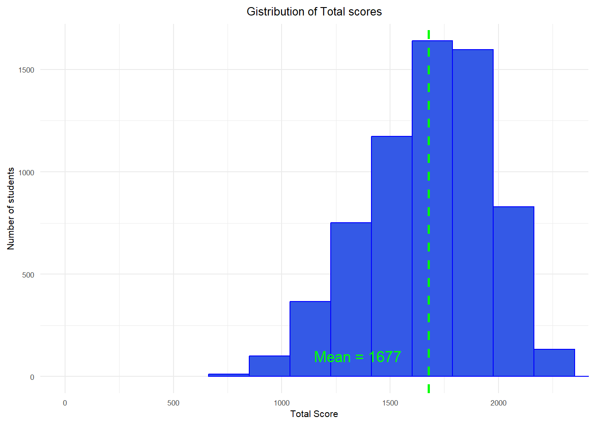
Remake Visualization
Show the code
p1 + p2 +p3 +p4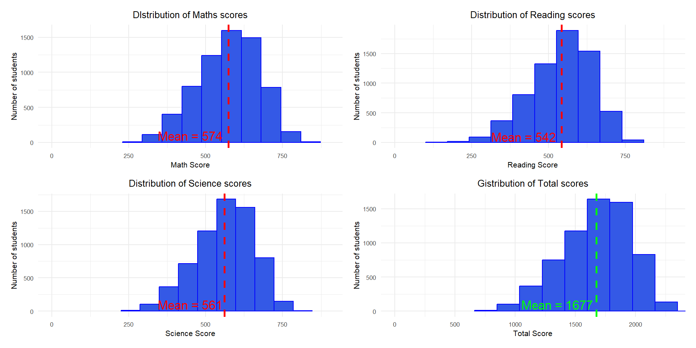
Clarity:
- Each histogram clearly shows the grade distribution, and users can easily understand the general trend of the data.
- The addition of mean dotted lines and text labels is helpful for communicating the central location of each distribution, providing a quick reference.
- The title of each histogram clearly indicates the type of achievement they represent.
- Adding the total variable to show more detail.
Aesthetics:
- The use of contrasting colors (blue histogram and red mean line) enhances the visual effect, making the mean stand out and easy to identify.
- The placement and formatting of text labels look uniform, which helps maintain the overall consistency of the chart.
5.2 Boxplot - Gender and Subjects
Now I will compare each subjects by the genders:
ggplot(data=stu_qqq_SG_3,
aes(y = math_average,x= gender)) +
geom_boxplot()+
geom_point(stat="summary",
fun.y="mean",
colour ="red",
size=4) +
ggtitle("Boxplot of Math Score (by Gender)")+
labs(y = "Math Score")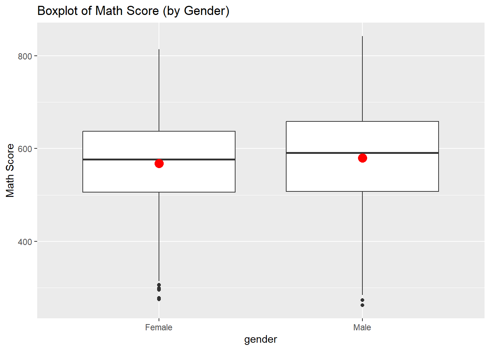
ggplot(data=stu_qqq_SG_3,
aes(y = read_average,
x= gender)) +
geom_boxplot()+
geom_point(stat="summary",
fun.y="mean",
colour ="red",
size=4) +
ggtitle("Boxplot of Reading Score (by Gender)")+
labs(y = "Reading Score")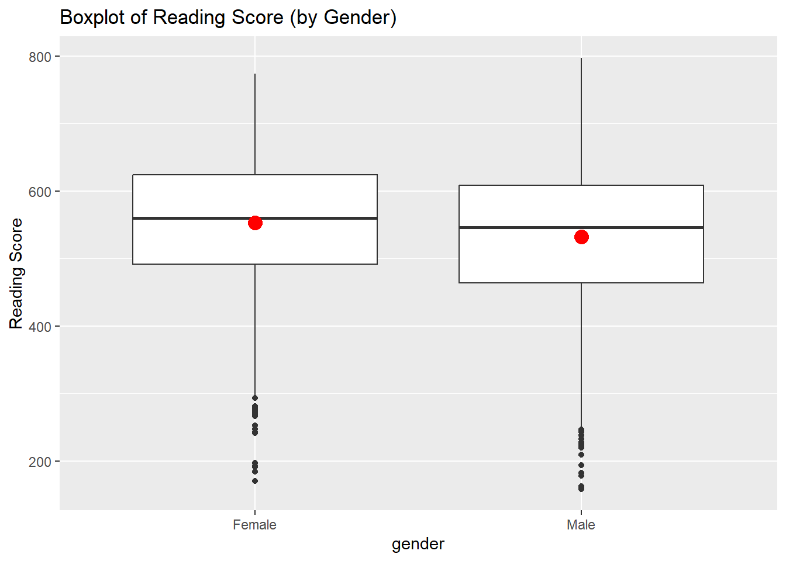
ggplot(data=stu_qqq_SG_3,
aes(y = sci_average,
x= gender)) +
geom_boxplot()+
geom_point(stat="summary",
fun.y="mean",
colour ="red",
size=4) +
ggtitle("Boxplot of Science Score (by Gender)")+
labs(y = "Science Score")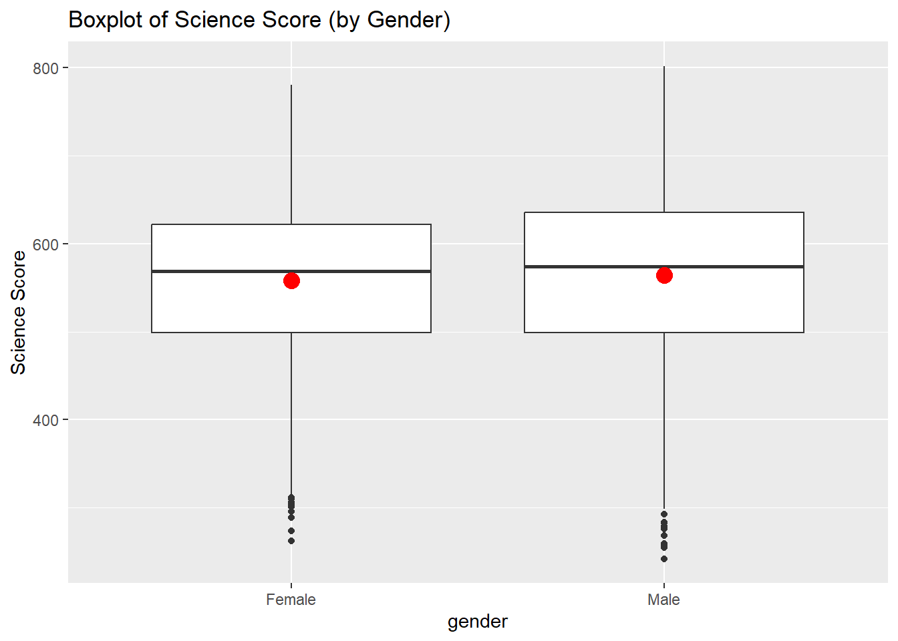
Findings
From the boxplots above, Male’s math score has a higher middle and mean as compared to Female’s math score, However, Male’s math score has a lower minimum value as compared to Female’s math score.
From the boxplots above, Male’s reading score has a lower middle and mean as compared to Female’s reading score. In addition, Male’s reading score has a lower minimum value as compared to Female’s reading score.
From the boxplots above, Male’s science score has a slightly higher middle and mean as compared to Female’s science score, However, Male’s science score has a lower minimum value as compared to Female’s science score.
5.2.2 REMAKE
Show the code
p4<-ggplot(data=stu_qqq_SG_3,
aes(read_average,
gender
))+
coord_cartesian(xlim=c(100,1000)) +
geom_boxplot(color="blue")+
ggtitle("Boxplot of Read Score (by Gender)")+
labs(x = "Read Score")+
labs(y= "Gender")+
theme_minimal()+
theme(text = element_text(size = 8),
plot.title = element_text(hjust = 0.5))+
stat_summary(geom = "point",
fun = "mean",
colour = "red",
size = 2)+
stat_summary(geom = "text",
fun = "mean",
colour = "red",
size = 3,
aes(label = round(..x.., 0)),
vjust = -1.5,
hjust= -0.7)
p5<-ggplot(data=stu_qqq_SG_3,
aes(math_average,
gender
))+
coord_cartesian(xlim=c(100,1000)) +
geom_boxplot(color="blue")+
ggtitle("Boxplot of Math Score (by Gender)")+
labs(x = "Math Score")+
labs(y= "Gender")+
theme_minimal()+
theme(text = element_text(size = 8),
plot.title = element_text(hjust = 0.5))+
stat_summary(geom = "point",
fun="mean",
colour ="red",
size=2)+
stat_summary(geom = "text",
fun = "mean",
colour = "red",
size = 3,
aes(label = round(..x.., 0)),
vjust = -1.5,
hjust= -0.8)
p6<-ggplot(data=stu_qqq_SG_3,
aes(sci_average,
gender
))+
coord_cartesian(xlim=c(100,1000)) +
geom_boxplot(color="blue")+
ggtitle("Boxplot of Science Score (by Gender)")+
labs(x = "Science Score")+
labs(y= "Gender")+
theme_minimal()+
theme(text = element_text(size = 8),
plot.title = element_text(hjust = 0.5))+
stat_summary(geom = "point",
fun="mean",
colour ="red",
size=2)+
stat_summary(geom = "text",
fun = "mean",
colour = "red",
size = 3,
aes(label = round(..x.., 0)),
vjust = -1.5,
hjust= -0.7)
p20<-ggplot(data=stu_qqq_SG_3,
aes(total_average,
gender
))+
coord_cartesian(xlim = c(100,2200))+
geom_boxplot(color="green")+
ggtitle("Boxplot of Total Score (by Gender)")+
labs(x = "Total Score")+
labs(y= "Gender")+
theme_minimal()+
theme(text = element_text(size = 8),
plot.title = element_text(hjust = 0.5))+
stat_summary(geom = "point",
fun="mean",
colour ="red",
size=2)+
stat_summary(geom = "text",
fun = "mean",
colour = "red",
size = 3,
aes(label = round(..x.., 0)),
vjust = -1.5,
hjust= -0.7)Show the code
p4 + p5 +p6 +p20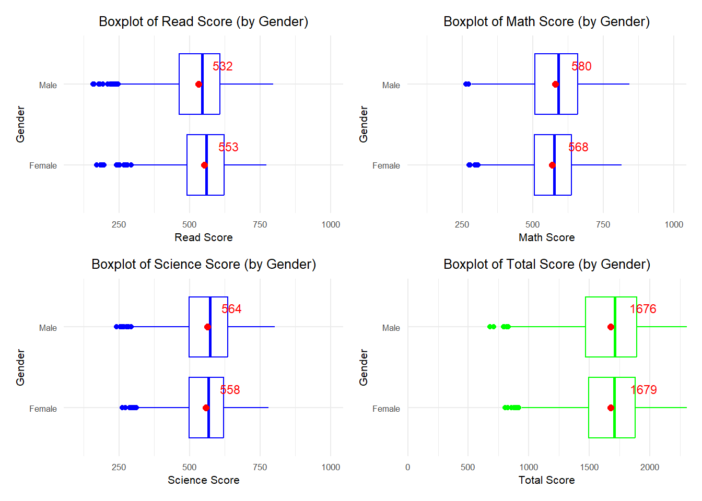
Clarity:
- Labels that increase the average value are good for readers to read
- Putting the boxplot of the three disciplines together allows the reader to compare them.
- Adding the total variable to show more detail.
Aesthetics
Use contrasting colors (blue histogram and red mean line) to enhance the visual effect, making the mean stand out and easy to identify.
5.3 Bar graph - Expected Education and Subjects
ggplot(data=stu_qqq_SG_3,
aes(x= math_average,
fill = school)) +
geom_histogram(bins=20,
color="grey30")+
ggtitle("Distribution of Maths scores (by Expected School)")+
labs(x = "Math Score")+
labs(y= "Number of students")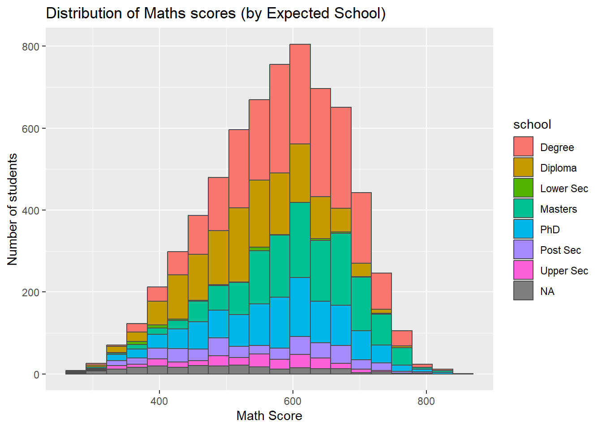
ggplot(data=stu_qqq_SG_3,
aes(x= read_average,
fill = school)) +
geom_histogram(bins=20,
color="grey30")+
ggtitle("Distribution of Reading scores (by Expected School)")+
labs(x = "Reading Score")+
labs(y= "Number of students")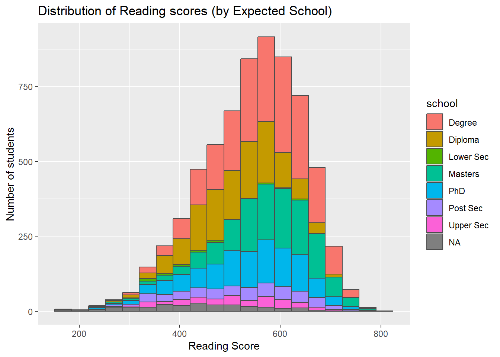
ggplot(data=stu_qqq_SG_3,
aes(x= sci_average,
fill = school)) +
geom_histogram(bins=20,
color="grey30")+
ggtitle("Distribution of Science scores (by Expected School)")+
labs(x = "Science Score")+
labs(y= "Number of students")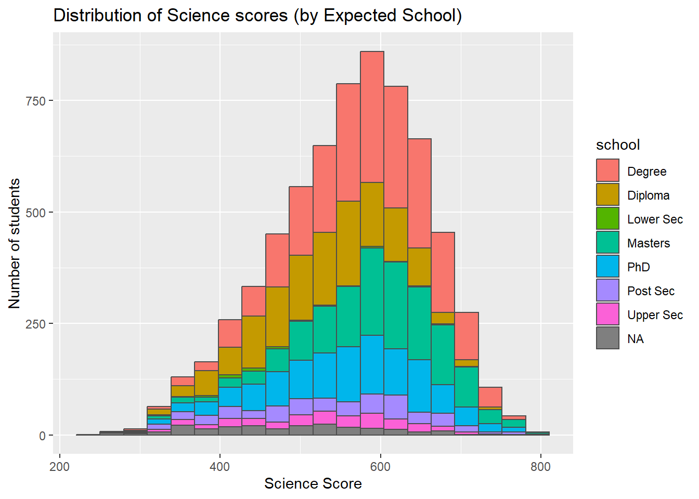
Findings
In all the histogram plots, all subjects show that the expected education chosen by students is mainly degree, followed by masters/diploma. This is no surprisingly as due to higher number of singapore residents aged 25 years and above having diploma/degree: link. Students who are taking PISA has expectation of going to a university with the current scores they obtained from the various subjects.
5.4 Kernel density estimate plot (Gender and Socioeconomic Status)
I will examine the relationship between gender and socioeconomic status.
ggplot(data=stu_qqq_SG_3,
aes(x = socioeconomic_status,
colour = gender)) +
geom_density()+
ggtitle("Distribution of Socioeconomic Status (by Gender)")+
labs(x = "Socioeconomic Status - PISA Index")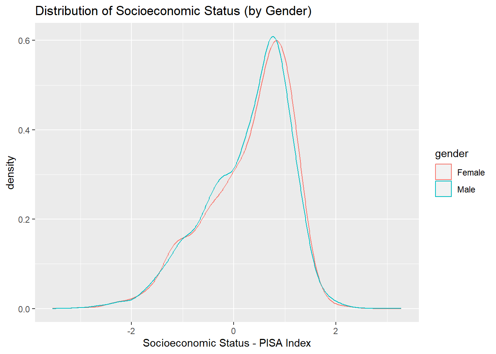
Findings
The density curve for both gender seems to be left-skewed, this suggests that the mean of the socioecomomic status index is less than the median of the socioeconomic status index.
Female students has a higher socioeconomic status as compared to male students with the peak more to the right compared to male students. However, male students’ socioeconomic status has a higher peak compared to female students.
5.5 Scatterplot (Socioeconomic Status and Subjects Score)
I will further examine a potential socioeconomic status with the various subjects score
ggplot(data=stu_qqq_SG_3,
aes(x= math_average,
y= socioeconomic_status)) +
geom_point()+
ggtitle("Socioeconomic Status - PISA Index and Maths scores") +
labs(x = "Math Score")+
labs(y = "Socioeconomic Status - PISA Index")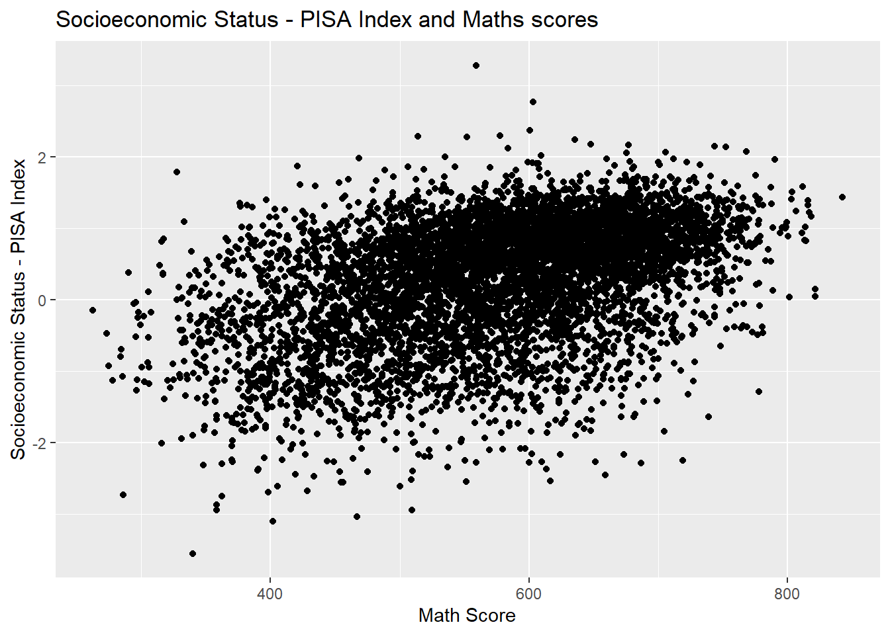
ggplot(data=stu_qqq_SG_3,
aes(x= read_average,
y= socioeconomic_status)) +
geom_point()+
ggtitle("Socioeconomic Status - PISA Index and Reading scores") +
labs(x = "Reading Score")+
labs(y = "Socioeconomic Status - PISA Index")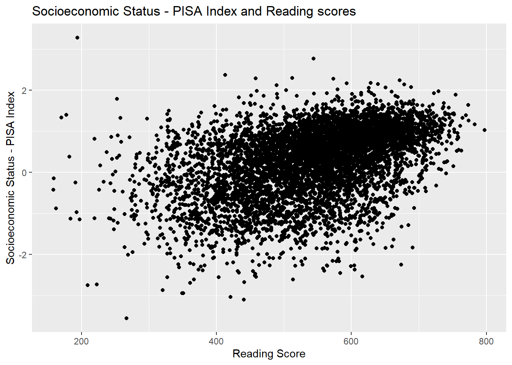
ggplot(data=stu_qqq_SG_3,
aes(x= sci_average,
y= socioeconomic_status)) +
geom_point()+
ggtitle("Socioeconomic Status - PISA Index and Science scores") +
labs(x = "Science Score")+
labs(y = "Socioeconomic Status - PISA Index")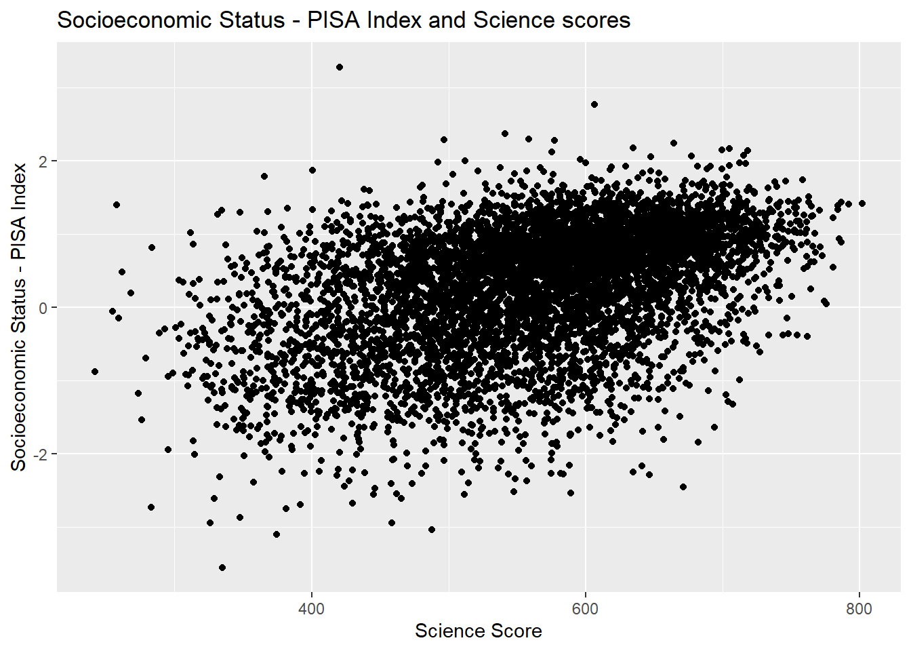
Findings
Based on all the scatterplots, It seems to suggest that there is no relationship between the subjects and socioeconomic status as the points seems to be randomly scattered. Further tests are needed to examine this.